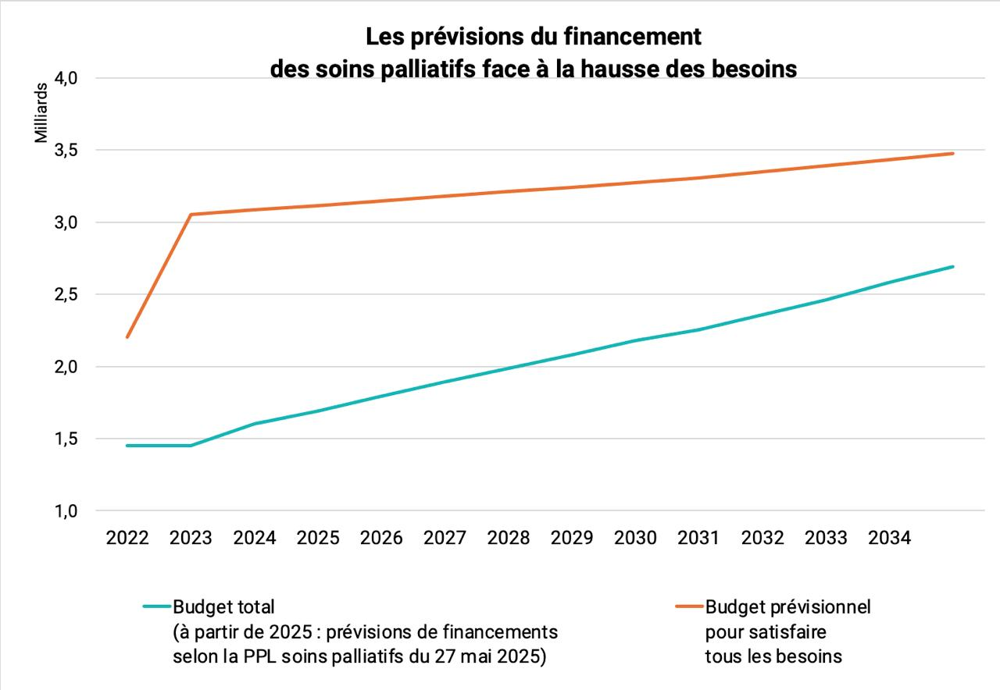

En 2021, un patient sur deux qui devait avoir des soins palliatifs n'en a pas eu, faute de budget et de personnel soignant. Pour y remédier, l'Assemblée Nationale a voté le 27 mai 2025 (à l'unanimité) un plan décennal de financement des soins palliatifs.
En 2024 C. Vautrin déclarait dans Le Monde :
« De la capacité à mettre en place rapidement le plan pour soulager la douleur des malades – souvent à l’origine de leur demande de mort – dépend la crédibilité de l’engagement du gouvernement que toute personne souhaitant une aide à mourir puisse se voir effectivement proposer des soins palliatifs. »
Mais dans le meilleur des mondes, si les crédits suivent la loi de programmation votée le 27 mai, 80% seulement des besoins en soins palliatifs seront couverts en 2034.
4 patients sur 5 y auront accès.
Dommage pour le 5e ?
De plus, le budget alloué n’est pas le seul paramètre à prendre en compte. Lorsque l’on parle de “lits”, on parle de personnel. Actuellement en France il existe environ 7 500 lits de soins palliatifs, dans des unités dédiées ou en services spécialisés. Selon le rapport de la Cour des comptes 2023, il en manque 4 000. Pour les équipes mobiles, il en faudrait 200 en plus des 400 actuelles. De nombreuses unités de SP doivent fermer des lits ou ferment tout court faute de médecins, même dans des régions dotées en soins palliatifs, en Île-de-France ou PACA.

Selon une étude de la DREES, le nombre d’infirmières (toutes spécialités) même s’il continue d’augmenter, ne suffira pas à répondre à la hausse croissante des besoins dans les années à venir, du fait du vieillissement de la population.
Il est absolument irréaliste de penser combler les besoins en budget et personnel soignant vu la situation actuelle et les projections futures. Il est donc certain qu'en plus des suicides assistés "consentis" à l'issue de pressions validistes, d'autres seront "consentis" dans la souffrance, faute de soins de qualité pour la pallier.
#StopLoiSuicideAssisté